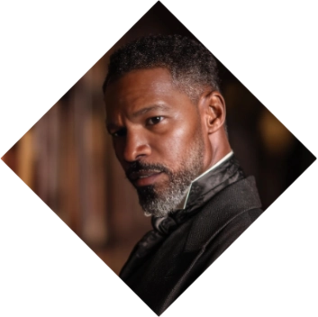

Archer Dupont
Archer Dupont
The Professor
A formidable professor by day, he was born in New Orleans to a very difficult family context, with debts piled up after his single-mother worked her back to support him. It's through those times that Archer is raised by his Grandma, a well respected Mambo who taught him the way of the Spirits after noticing how a friendly Dog spirit seemed to take affection with his young grandson.
Life took him to eventually connect with the Ngoma and become a researcher and college professor at a local college, where he teaches the unprivileged and the ignored. He loves to get involved with his community of black men and has taken wing of a young protege... until he found out his son got enslaved by a Vampire and decided to take matters into his own hands. ❧
Plot Hooks.
Spiritual Aid. The Spirits are angry and are out there uncontrolled. He's learned how to appease them and even negotiate with them. This has made him a target of some powerful entities, from this world and the other.Signature Motif.
Reading. He is a book worm and loves and adores to read. With new technology coming out, even when training at the gym or going to the pool he can continue his fave activity of reading. Usually the books he hold contain keys to the plot itself...Perfect for...
Power play, Interracial couples and Teaching. He doesn't seem like it, but Archer likes to take control and likes to keep it that way on the bed. Also, if you are an inexperienced innocent young man then you probably want to meet him for him to teach you the ways of pleasure.Goal
Reformation.
Just like other members of the Sagittarius Society, he wishes to reform and change the world. Specifically, to break the barrier between this World and the Other. To him, that would be the best way to Ascend and to become one with the Divine.obstacle
Modernity.
Spirits don't pay taxes and cannot be capitalized, which is why modern entities are observing what he is doing and are moving to stop him. At times it could be vampires looking to keep things as they are, at times, the Technocratic order seeking to stop his perverse thinking.«It was the Wild who willed this world»
Personal Data
Archer Dupont
Name
55
Age
09/Dec/1970
DOB
Order of Hermes
Sect
Black
Hair
Brown
Eye color
House Ngoma
subgroup
Black
Ethnicity
American
Nationality
Mentor
Status
1.75m
Height
85 kg
Weight
English, Latin and French
Languages
Male
Gender
Homosexual
Preference
Researcher / College Professor
Profession
Top
Position
8" / 5"
length / Girth
Jamie Foxx
Faceclaim
Adept
Rank
ENTP
MBTI
Character sheet
Attributes
Distinctions
skills
Paradigm
Power Trickles Down

Nature
Mentor
Demeanor
Visionary


Knowledgeable
Supportive
Patient
Nurturing
Dedicated
Pedantic
Overbearing
Intrusive
Idealistic
Vulnerable
Supportive
Patient
Nurturing
Dedicated
Pedantic
Overbearing
Intrusive
Idealistic
Vulnerable
Determined
Inspirational
Creative
Optimistic
Persuasive
Idealistic
Fanatical
Impractical
Naïve
Irrational
Inspirational
Creative
Optimistic
Persuasive
Idealistic
Fanatical
Impractical
Naïve
Irrational
Strength

Dexterity
Stamina
Charisma

Manipulation
Composure
Intelligence
Wits
Resolve
Areté
🙪
Specialties
Negotiation
Social Studies
Personal Defense
Mentoring
Persuasion
Expression
Insight
Academics
Occult
Empathy
Leadership
Politics
Awareness
Athletism
Subterfuge
Intimidation
Etiquette
Esoterica
Technology
Other skills

Focus
Paradigm
Why?
Power Trickles Down To Archer, the Divine is real. The Spirits are there and ready to support those who nurture them. Mages are people who understand how to commune with the Spirits, their own or those external, and when the world Ascends, there will be no barrier between the Umbra and the material world, as we will be Spirit and Flesh.
Practices
How?
Shamanism, Witchcraft, Dominion, Psionics: Reality is bent when by his hands when he serves the spirits and they in return share their power. He's trained extensively to understand his mind and how it rules over his body, grasping control of his body to manifest his Will.
Paraphernalia
With what?
The following is a list of tools that he often uses:Prayers and Invocations
Symbols
Brews and Concoctions
Voice and Vocalizations
Wands
Languages
Dances and movements (hand gestures)

Spheres

Ars Mentis
Apprentice
Sense thoughts and emotionsEmpower self
Mind Shield
Read Surface Thoughts
Create Impressions
Mental Impulse
Empathetic Bond

Ars Essentiae
Apprentice
Perceive forcesControl Minor Forces

Ars Spiritum
Adept - Affinity
Spirit SensesTouch Spirit
Manipulate Gauntlet
Pierce Gauntlet
Step Sideways
Rouse And Lull Spirit
Rend and Repair Gauntlet
Bind Spirits

Ars Vis
Apprentice
Etheric SensesEffuse Personal Quintessence
Consecration
Fuel Pattern
Weave Odyllic Force
Enchant Patterns
Create Pattern
Body of Light
Backgrounds


Signature Assets
Celestial Affinity
Nature's Jagglings seem to be drawn to him, supporting Archer in his quest. Whenever summoning Natural Jaggling's you can reroll Hitches for free.
Judge's Wisdom
Immune to supernatural feats that deal with emotional manipulation. His own inner emotional life is tempered into a stoic and decisive character. Though difficult, he is not immune to possession or mental control.
Enchanting Feature: Smile
A smile that charms, disarms and sometimes, disrobes. Can add a D6 to the dice pool when required.
Other Assets
Blessing - Charisma & Expression
The spirit of the Dog chose Archer since he was a kid, blessing him with boundless charisma and expression which allows him to find friends everywhere. Reroll Hitches in Charisma & Expression rolls.
Apprentice
As required by his faction, House Ngoma, he is taking under his wing a prospect future student. Usually a black kid who is able to see the Spirits such as him. Other players are encouraged to take up this spot if they wish so.
Effigy: Panther
A magical ring given to him the day by the Spirit of Panther after an intense Seeking. It allows him to call upon the divine spirit and share their power. Add D6 in rolls related to feats of the Panther after being called upon.